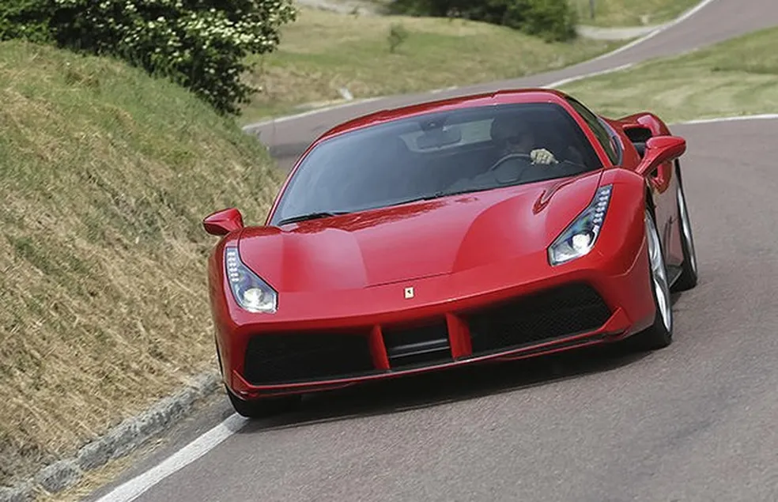

Ferrari 488
A Ferrari 488 é uma família de carros esportivos de motor central produzidos pela Ferrari, conhecida por substituir a Ferrari 458
principal, 488 GTB, foi lançado em 2015 e é equipado com um motor V8 biturbo de 3.9 litros, entregando 670 cv. A linha também inclui a 488 Spider (conversível), a 488 Pista (com foco em desempenho) e versões de corrida como a 488 GTE e GT3.
